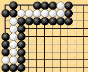
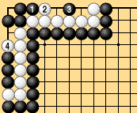

|
| Defining live and dead groups rigorously and concisely is more difficult than you might imagine. Once this task is accomplished, formulating territory rules becomes easy. Rules theorists have made repeated attempts, but in the end they have not succeeded in creating a direct, rigorous definition. Few people would doubt that the group in Dia. 2-19-1 is independently alive, even though it has only false eyes. At the same time, few people would say that the white group in Dia. 2-19-2 is independently alive. |
| Dia. 2-19-1 | Dia. 2-19-2 |
|---|
| Dias. 2-20-1 to 2-20-3 show an extremely interesting example in which White cannot live on his own, but Black can kill only one of the white groups. It is not easy to define just one of the white groups as being alive. |
|  |  |
| Dia. 2-20-1 | Dia. 2-20-2 |
|---|---|
| Dia. 2-20-3 |